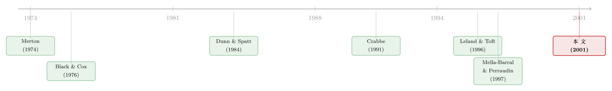

同一只债券，凭什么有人多拿五倍？——把「要挟」写进期权定价
本文读的是 David (2001, Journal of Financial Economics)：可回售证券（putable securities）的持有人，事实上对公司的流动资产握有「第一索取权」，因而能用「逼一家有偿付能力的公司破产」来要挟股东。这份要挟，让回售权的真实价值远超它的内在价值（intrinsic value）。本文用多边讨价还价理论把这份战略价值（strategic value）算了出来——它取决于发行人的规模、潜在的破产成本，以及回售债券在持有人之间的分布相对于公司流动性头寸的位置。
1 一桩没头没尾的「赎身费」
先讲一个 1995 年的故事。
那一年秋天，Kmart 公司站在了破产的悬崖边上。说它要破产，听上去很荒唐：它手上握着超过 $1 billion 的现金和有价证券，整个公司的资产价值高达 $16 billion。这怎么看都是一家有偿付能力的公司。可它偏偏快被逼死了——因为评级机构把它的债券一路下调，眼看就要触发 $550 million 毒丸回售债券（poison put bonds）的回售条款。一旦触发，债券持有人有权在评级跌破某一档的当天，把债券按面值塞回给公司。
问题来了。Kmart 的现金明明够还。可它的高级银行债权人早就写好了契约：被加速偿付的回售债券不得超过总额的五分之一。换句话说，只要有超过这个临界比例的持有人同时行权，Kmart 就被迫只能选择破产清算——哪怕它本质上完全偿得起。
故事的结局是：Kmart 跟债权人谈成了和解，掏出一笔钱让债券持有人交出手里的回售权。媒体报道说，最终一共支付了 $98 million。而最耐人寻味的一个细节是——同样的债券，一家保险公司每一美元拿到的钱，是持有相似债券的银行的五倍。
请停下来想一想这件事的荒谬之处。同一张合同，同样的票面，同样的回售条款，凭什么有人拿一份，有人拿五份？如果回售权的价值就等于它写在纸上的那点东西——「按面值卖回」与「市价」之间的差额——那所有人理应拿一样的钱。可现实不是。
这就是 David (2001) 这篇论文要回答的问题：回售权的真实价值，到底是什么决定的？
2 内在价值之外，还有一份「要挟」
首先要把两个概念分开。
一份回售权的内在价值（intrinsic value），是教科书式的：如果债券的无套利市价 P_D < 1（每一美元面值），那么把它按面值 $1 卖回给公司，就赚到了 1 - P_D。这是把回售权当成一份普通的「看跌期权」来算——只盯着合同条款本身。
但 David 的洞见是：在流动性危机里，回售权持有人手里握着的，不只是一份合同，而是一件武器。
为什么？因为回售触发的那一刻——记为时刻 q_P，也就是公司信用评级第一次跌到触发档位的时刻——假设公司有效的流动资产小于需要偿还给回售持有人的金额。注意「有效」二字：资产负债表上的现金未必能用，往往银行债的契约会限制公司在困境中动用这些现金。于是公司没法同时满足所有人的回售要求；它要么贱卖资产、要么高息举债、要么干脆破产。每一条路都要付出破产成本（financial distress costs）。
正因为有这笔成本悬在头上，公司宁愿坐下来跟持有人谈：「别行权了，我给你一笔钱，把回售权交出来。」于是一场讨价还价开始了。而持有人能从股东兜里抠出多少，取决于他威胁的可信度有多高——他能不能真的、单凭自己（或联合几个人）就把公司推下悬崖。
这正是「战略价值 > 内在价值」的来源。内在价值只问「合同值多少」，战略价值还要问「拿着这件武器，你能要挟到多少」。两者只有在一种情形下才相等：公司的有效流动资产足以覆盖全部回售债券。一旦流动性/可回售债务之比小于 1，缺口出现，要挟就有了价值。
而那家保险公司之所以能拿到五倍——按本文的逻辑——正是因为它在「谁是关键一票」的格局里，处在一个比那些零散银行更有威胁力的位置上。
3 一场多边讨价还价，与一个意外的「捷径」
接着，一个自然的问题是：威胁的可信度，到底怎么量化？
David 把回售危机刻画成一个多边讨价还价（multilateral bargaining）博弈：公司（代表股东）和各个回售债券持有人轮流出价、还价，直到达成和解。这类「轮流出价」的非合作博弈，传统上以 Rubinstein (1982) 为源头。但参与人一多，求解就变得棘手。
真正关键的一步在于：David 借用了 Hart and Mas-Colell (1996) 的结果——这个轮流出价博弈的解，恰好等于一个合作博弈论里的概念：Shapley 值（Shapley value）。
Shapley 值给每个参与人分配的价值，等于他的期望边际贡献。所谓边际贡献，就是「他加入某个联盟，让这个联盟的价值增加了多少」；所谓期望，是对所有可能形成的联盟取均匀分布的平均。形式上，参与人 i 的 Shapley 值为：
$$\Phi_i = \sum_{S \subseteq I \setminus \{i\}} \frac{|S|!\,(|I|-|S|-1)!}{|I|!}\,\big[\,v(S \cup \{i\}) - v(S)\,\big]$$
这里 I 是全体参与人（公司加上所有回售持有人），v(S) 是联盟 S 在大家都做出联盟最优决策时的价值。括号里那一项 v(S∪{i}) - v(i) 就是 i 的边际贡献，而前面那个组合系数，正是「i 恰好以这种次序加入」的概率。
这个换算之所以漂亮，是因为它把一个难解的动态博弈，变成了一个可以「数联盟」的组合问题。而它的经济含义更直白：一个持有人值多少，取决于他有多大概率成为「关键先生」——即他的加入，恰好能让一个本来不够格的联盟，凑足了把公司逼上绝路的筹码。
然后，本文给出了一个让人会心一笑的结论。当回售债务被一连续统的、无穷小的持有人持有时（也就是公开市场上典型的散户化债券），任意一个持有人「身处一个有威胁力的联盟」的概率，恰好等于一个简单到可以写在信封背面的数字：
$$\lambda = \frac{\text{(effectively liquid assets)}}{\text{(putable debt)}}$$
流动性除以可回售债务。λ < 1 时，战略价值就严格大于内在价值；λ ≥ 1 时，两者重合，要挟失效。规模和分布在这里第一次显形：公司越小、潜在破产成本越高、流动性相对回售债务越薄，这份「要挟溢价」就越厚。
这也解释了 Kmart 故事里那个五倍之谜的方向：当债务并非均匀地握在无穷小持有人手里，而是有人持有「一大块」时，大持有人可能成为不可替代的关键先生，从而攫取额外的战略价值；而那些零散的小持有人，单凭自己谁都威胁不了公司，边际贡献趋近于零（David, 2001, Section 4.2 对「一个大持有人 + 一群小持有人」的情形有专门刻画）。
4 模型：把博弈解，焊进结构化债券定价
这篇论文的技术贡献，在于把上面这套博弈论的结论，当作边界条件，塞进了一个标准的结构化（structural form）债券定价框架里。下面把模型一步步拆开。
第一步：资产价值过程。 公司有一份生产性资产，其无杠杆市值 V 在风险中性测度下服从几何布朗运动（assumption 1）：
$$\frac{dV}{V} = [\,r - d\,]\,dt + \sigma\,dz$$
r 是常数无风险利率，d 是付给证券持有人的价值比例，z 是维纳过程。这是 Merton (1974)、Black and Cox (1976) 以降所有结构模型的起点。
第二步：资本结构与重组边界。 公司有高级债（面值 B）、初级非回售债（D^{NP}）、初级回售债（D）。各类债权人有最低净值保护契约 a_S，股东能拿走资产净值的一个比例 a_E，破产成本是公司价值的一个比例 φ。只有当公司价值高于某个重组边界 V_D 时，债务才允许被滚动续期；一旦资产价值跌到 V_D，公司立刻申请破产（assumption 3）：
$$V_D = \frac{1}{(1-\phi)(1-a_E)}\,\big[\,a_B\,B + a_D\,(D + D^{NP})\,\big]$$
直觉上，V_D 是「能保证每一类负债拿到最低偿付」的最小资产价值。
第三步：无危机时的债券定价。 用 Leland and Toft (1996) 的框架，一美元初级债在 t 时刻、于 T 到期、公司价值为 V 时的价格为：
$$P_D(V, V_D; t, T) = \frac{c_D}{r} + e^{-r(T-t)}\Big(1 - \frac{c_D}{r}\Big)\big(1 - F(V, V_D; t, T)\big) + \Big(a_S - \frac{c_D}{r}\Big)\,G(V, V_D; t, T)$$
其中 F(·) 是资产价值首次击中 V_D 的首达时间（first passage time）的累积分布函数，G(·) 是其贴现密度的积分；两者都有 David 在式 (4)–(6) 给出的闭式解（基于标准正态分布 N(·)）。这一项就是把「公司随时可能在到期前撞上违约边界」这件事算进了债券价格里——关于把违约刻画成一道「障碍」、而不是只盯着到期日的思路，可参见《公司随时都可能倒下，期权定价却只盯着还债那一天》。
第四步：回售触发与破产时的偿付。 设 V_R 为对应触发评级 R 的资产价值，q_P 为 V 首次击中 V_R 的时刻。若被加速偿付的回售债超过触发额 T，公司被迫破产，此时按绝对优先级（absolute priority）偿付（assumptions 4–5）：
$$B_F = \min\{(1-\phi)V_R,\ B\}$$
高级债先拿，剩下的在初级债之间按面值比例分配，股东拿残值。这里 V_R 高于违约边界 V_D，所以一旦在评级边界被逼破产，偿付仍按优先级进行。
第五步：定义「待分的饼」。 危机谈判桌上，股东和回售持有人要分的那块「饼」v̄_{q_P}，等于资产价值，减去预期破产成本，再减去要付给高级债和初级非回售债的部分（式 15）。这是全文最核心的一个等式，把它逐项标注如下：
剩下的这块饼，就是股东与回售持有人要通过讨价还价瓜分的对象。回售持有人能切走多少，正是由第 3 节的 Shapley 值决定的。
第六步：让谈判有解的条件。 David 引入一个条件，保证谈判能够成功（Condition 1）——评级边界 V_R 要足够高，高到即便公司被回售逼入即时破产，回售持有人也能全额收回面值（D_F = D）：
$$(1-\phi)\,V_R \ge B + D^{NP} + D$$
这个条件等价于说：在触发评级那一刻，公司扣除潜在破产成本后的资产，仍然盖得过全部债务的面值。它的妙处在于：满足时，交易在行权时刻表现为「股东向债券持有人付一笔一次性的钱、但不立即破产」；不满足时，谈判可能破裂。David 在 Example 1 里给了一组具体参数（B=1, D^{NP}=1, D=0.5，a_B=0.7, a_D=0.5, a_E=0.25, φ=0.04，得 V_D=2.013），并说明只要波动率 σ 高于某个下界，Condition 1 就成立——因为给定违约概率，波动率越高，评级边界就越高。
最关键的创新，就在第五、六步与第三步的「焊接」处：把行权时刻的战略价值，当作事前定价的边界条件。换句话说，市场在危机之前给回售债券定价时，已经把「将来万一触发、持有人能要挟到多少」折现了进来。
5 校准：要挟溢价，真的写进了收益率里吗？
到这里，模型还只是逻辑自洽。它能不能解释真实数据？
David 做了两件校准。
其一，是对 Crabbe (1991) 的发现做反向验证。Crabbe 观察到，1980 年代末发行的投资级毒丸回售债券，在二级市场上的收益率出现了下降——也就是说，投资者愿意为「带回售保护」的债券多付钱。David 的校准显示，毒丸回售权的战略价值，是解释这些收益率下降的一个重要决定因素。换句话说，市场早就在为那份「将来能要挟」的可能性定价，只是过去没人把它从内在价值里分离出来。
其二，是把模型校准到 Kmart 1995 年的具体情境。结论同样指向：战略价值是回售持有人最终拿到偿付的重要决定项——这与 $98 million 的赎身费、以及保险公司拿到五倍的事实方向一致。
这类证券绝非小众。根据 Securities Data Company 的数据，1991–1997 年间约有 $141 billion 的毒丸回售债被发行，占样本期内全部非金融债券发行的近 15%；发行公司的中位数面值约 $250 million——这恰好是一家公司可能在危机里需要应付的流动性外流的量级。而 1999 年 General American Life 的案例则把舞台搬到了保险业：一家拥有 $29 billion 资产的公司，因为无法满足 $5 billion 投资协议（funding agreements, FAs）的同时回售而求助监管者，最终在支付了约面值 10% 的即时款项、并被 MetLife 收购后才收场。
6 文献脉络
David (2001) 站在两条河流的交汇处。
一条河是结构化信用定价。从 Merton (1974) 把公司股权看成一份看涨期权、Black and Cox (1976) 引入债券契约条款的违约边界开始，结构模型一路演进：Leland (1994) 把税盾、破产成本与最优资本结构装进同一个框架，Longstaff and Schwartz (1995) 给出可处理浮动利率债的简洁解，Leland and Toft (1996) 则补上了内生破产与信用利差期限结构——本文的债券定价骨架正是借自后者（关于结构模型在实证里「不是把利差算低了、而是算散了」的困境，可参见《结构模型给债券定价，错的从来不是「太低」，而是「太散」》）。
另一条河是风险债务中的战略行为。Franks and Torous (1989) 实证发现，破产前后绝对优先级的违反，是债权人与股东之间存在战略博弈的信号；Anderson and Sundaresan (1996) 与 Mella-Barral and Perraudin (1997) 给出了公司提供「战略性偿债」（往往低于承诺额）的条件。这些早期工作大多依赖某一方的「先动优势」。David 用轮流出价框架做了一个微妙的修正：先动优势在瞬时谈判或破裂概率趋零的极限下会消失，但它并未凭空蒸发，而是被重新分配给了其他参与人——所以前人那些定性结论在本框架里依然成立。
而最直接的思想源头，是 Dunn and Spatt (1984) 对偿债基金债券（sinking fund bonds）的战略分析：大持有人通过囤积大量在市流通的债券，成为偿债基金要求里的「关键先生」，从而向公司索取高于市价的偿付。David 指出，尽管经济情境不同，偿债基金持有人与回售持有人的战略地位惊人地相似——本文可以看成把 Dunn-Spatt 的「关键先生」逻辑，从偿债基金搬到了流动性危机里的回售证券，并用 Hart-Mas-Colell 的现代讨价还价理论给了它一个统一的解。Dunn and Spatt (1999) 后来还用类似思路解释了为什么按揭合同通常可赎回（callable）却不可回售（putable）。
关于「债权人用威胁来要挟股东、而威胁的可信度本身就是定价对象」这一母题，本博客另有一篇相邻的文章可对读：《威胁要「全赎回」，债主该不该信？》。

7 评论与延伸（Q&A + 研究方向）
(a) 几个可能的疑问
Q：「战略价值」和普通的「期权内在价值」到底差在哪？
内在价值只看合同：把面值卖回、与市价的差额，是一个单边的计算，不依赖别人怎么做。战略价值则是一个博弈的结果：你能拿多少，取决于你是不是关键一票，而这又取决于别人持有多少、流动性触发线卡在哪里。本文证明，只有当「有效流动资产 / 可回售债务」之比
λ ≥ 1时两者才重合；λ < 1时，战略价值严格更高。
Q：用 Shapley 值合理吗？现实里的谈判哪有这么「公平」？
关键不在于「公平」，而在于 Hart and Mas-Colell (1996) 证明了：一个具体的、轮流出价的非合作博弈，其均衡解恰好收敛到 Shapley 值。所以 Shapley 值不是凭空假设的分配规则，而是某类讨价还价过程的结果。当然，这依赖风险中性偏好（assumption 10）等简化——风险厌恶下的多边谈判，本文坦承超出了它的范围。
Q：为什么同一只债券，保险公司能拿到银行的五倍？
因为「关键先生」不是均匀分布的。当债务并非全握在无穷小持有人手里，而是某些人持有一大块、且其持有量恰好跨过了触发额
T的临界位置时，这些人的边际贡献远高于零散持有人。本文 Section 4.2 专门刻画了「一个大持有人 + 一群小持有人」的情形：小持有人单独谁都威胁不了公司，边际战略价值趋零；大持有人却能。监管也会插一手——Gen. Amer. 案例里，货币基金被规定不得剥离回售权去做战略要价，于是它们拿不到这份溢价。
Q：Condition 1 是不是把最有意思的情形（谈判破裂）给假设掉了？
部分是。Condition 1 保证了「谈判能成、且回售方全额回收面值」，这让定价干净可解。代价是它排除了「谈判真的破裂、公司在评级边界违约」的均衡。本文也指出，若在不满足 Condition 1 的评级边界写回售权，破裂确实可能发生，届时评级需要按
V_R处的违约重新校准。所以这是一个为了可解性付出的、被明确标注的边界。
Q：这跟我们常说的「公司债市场流动性危机」是一回事吗？
不是。本文讲的是发行人自身的流动性（公司有没有现金还回售款），而不是二级市场的交易流动性（债券好不好卖）。两者都叫「流动性危机」，机制却完全不同——后者的微观解剖可参见《差点死掉的那个市场：一场公司债流动性危机的微观解剖》。把两种流动性放进同一个框架，恰恰是一个值得做的延伸。
Q：模型预测，公司应该尽量把回售债「打散」给无穷小持有人吗？
逻辑上是的：分散持有会削弱单个持有人的关键性，从而压低公司要付的战略溢价（在
λ给定时）。但即便全部打散，只要λ < 1，战略价值仍然为正——这正是本文与 Dunn-Spatt (1984, Proposition 1) 一致的结论。所以「打散」能缓解、但消不掉要挟。
(b) 几个可能的研究问题与提案
1. 把「发行人流动性」与「市场流动性」并入同一框架。
【经济故事】回售触发往往伴随评级下调，而下调本身又会恶化二级市场流动性、推高发行人再融资成本——两种流动性互相喂养，可能放大危机。【可行性】中。需要把 David 的博弈边界条件嫁接到一个含交易成本/做市商资本的二级市场模型上；纯理论可做，实证识别困难（要同时观测持仓分布与做市深度）。
2. 外资持有人会不会改变「关键先生」的格局？
【经济故事】外资在危机中的行为常被刻画为「赖着不走」或集体撤离（参见《外资真是「蝗虫」吗？》）。如果回售债的外资持有比例高、且其行权动机与本地机构系统性不同，战略价值的分布会被重写。【可行性】中。需要带持有人国籍标签的债券持仓数据（如美国的 eMAXX / 保险公司 NAIC 申报），用回售触发事件做事件研究。
3. 评级触发条款的「拥挤」效应。
【经济故事】当大量债券把回售/重置条款挂在同一档评级上，一次集体下调会让许多发行人同时进入谈判——这是一种被合同制造出来的系统性风险。【可行性】高。SDC / Mergent FISD 有债券契约条款的字段，可统计「评级触发型」回售债的存量分布，结合评级迁移矩阵估计同步触发的概率。识别相对干净。
4. 把战略价值从信用利差里「剥离」出来并定价。
【经济故事】如果市场确实为「将来能要挟」付费，那么带回售权的债券与同发行人、同期限的普通债之间，应存在一个可观测的、随
λ变化的利差。【可行性】中高。需要匹配同一发行人的回售债与非回售债（类似《一张「期权」三种戴法》的对照思路），用公司流动性头寸的代理变量去解释这个利差的横截面。
5. 多边谈判下的风险厌恶。
【经济故事】本文承认风险中性是关键简化。现实里，临近危机的持有人很可能极度风险厌恶，这会改变他们的出价行为，进而改变战略价值的分配。【可行性】低。带风险厌恶的多边轮流出价博弈本身就是博弈论的开放难题（本文亦明言超出其范围），更偏理论攻坚。
8 参考文献
Anderson, R. W., Sundaresan, S. (1996). Design and valuation of debt contracts. The Review of Financial Studies 9(1), 37–68.
Black, F., Cox, J. C. (1976). Valuing corporate securities: some effects of bond indenture provisions. The Journal of Finance 31(2), 351–367.
Crabbe, L. (1991). Event risk: an analysis of losses to bondholders and 'super poison put' bond covenants. The Journal of Finance 46(2), 689–706.
David, A. (2001). Pricing the strategic value of putable securities in liquidity crises. Journal of Financial Economics 59(1), 63–99.
Dunn, K. B., Spatt, C. S. (1984). A strategic analysis of sinking fund bonds. Journal of Financial Economics 13(3), 399–423.
Dunn, K. B., Spatt, C. S. (1999). Call options, points and dominance restrictions on debt contracts. The Journal of Finance 54(6), 2317–2337.
Franks, J., Torous, W. (1989). An empirical investigation of firms in reorganization. The Journal of Finance 44(3), 747–779.
Hart, S., Mas-Colell, A. (1996). Bargaining and value. Econometrica 64(2), 357–380.
Leland, H. E. (1994). Corporate debt value, bond covenants, and optimal capital structure. The Journal of Finance 49, 1213–1252.
Leland, H. E., Toft, K. B. (1996). Optimal capital structure, endogenous bankruptcy, and the term structure of credit spreads. The Journal of Finance 51(3), 987–1019.
Longstaff, F. A., Schwartz, E. S. (1995). A simple approach to valuing risky fixed and floating rate debt. The Journal of Finance 50(3), 789–819.
Mella-Barral, P., Perraudin, W. (1997). Strategic debt service. The Journal of Finance 52(2), 531–556.
Merton, R. C. (1974). On the pricing of corporate debt: the risk structure of interest rates. The Journal of Finance 29(2), 449–470.
Rubinstein, A. (1982). Perfect equilibrium in a bargaining model. Econometrica 50(1), 97–109.